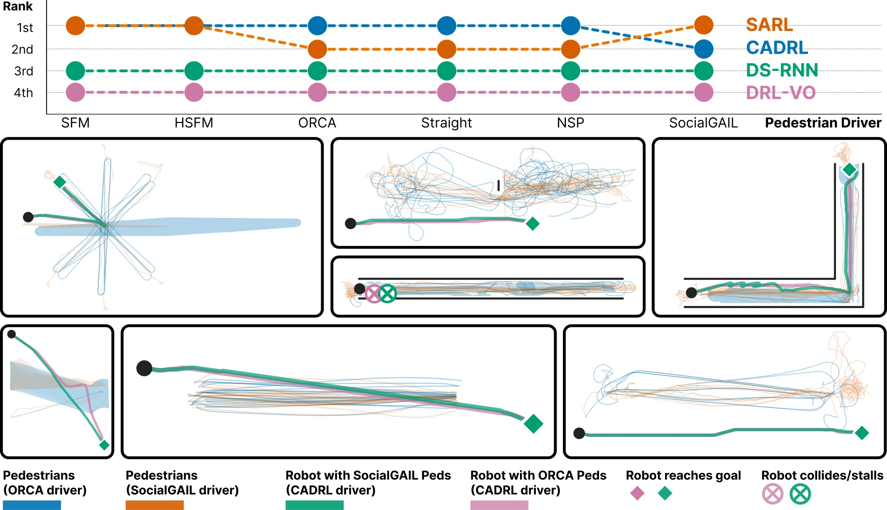

Social navigation benchmarks quietly fix one pedestrian model. PEDS makes it a variable, and robot policy rankings reorder depending on which crowd model you test against.

01 / Abstract
Robot policy or pedestrian model? Separating the two.
Social navigation benchmarks evaluate robot policies but leave the pedestrian behavior model as an uncontrolled axis of evaluation, conflating claims about policies with claims about the human models used to evaluate them. We introduce PEDS (Pedestrian Evaluation Dataset & Simulator), a modular human simulator that treats the pedestrian driver as the unit of variation. A deterministic executor synchronizes the driver and the robot policy so that, at fixed seed, driver substitution is the only source of trial-to-trial variation.
The release comprises six pedestrian drivers across four model classes: force-based (SFM, HSFM), velocity-based (ORCA), a no-avoidance baseline (Straight), and imitation-learned (NSP, SocialGAIL). The accompanying dataset spans 20 pedestrian-driver scenarios on a load × density grid, crossed with four robot policies in closed loop. Within-policy success varies by up to 14 percentage points across pedestrian drivers overall, and up to 30 percentage points in dense navigation scenarios. Cross-class trajectory divergence averages 1.5× in general and peaks above 3× on dense scenarios. On pure-navigation scenarios, a change of seed moves trajectories more than a change of driver (ratio 0.75); on behavior-tree scenarios the driver effect is the larger one (1.43). We release the dataset under CC BY 4.0 and the code under the Apache 2.0 License.
- Pedestrian drivers
- SFM · HSFM · ORCA · Straight · NSP · SocialGAIL
- Robot policies
- SARL · CADRL · DS-RNN · DRL-VO
- Scenarios
- 20, load × density
- Middleware
- ROS 2
- Dataset
- CC BY 4.0
- Code
- Apache 2.0
02 / Demo video
A modular human simulator built on ROS 2
Social navigation research typically compares robot policies under a single pedestrian simulator. That makes evaluation inseparable from the crowd model: two policies may look better or worse simply because they were tested against different crowd dynamics.
CLIP 01 / 05Any simulator. The same scenario runs in RViz, Gazebo and Isaac Sim at once, so results stay comparable across physics engines.
03 / System
Swap the crowd, keep everything else fixed
PEDS separates pedestrian behavior, scenario logic, and robot navigation into independent components. Drivers can be exchanged without touching the simulation infrastructure or the robot controller, isolating the influence of pedestrian behavior on downstream navigation.
FIG. 2 System overview. The two pedestrian-driver slots, the deterministic executor cycle that advances drivers and the robot policy in lockstep, and the boundary that separates pedestrian infrastructure (released as plug-ins) from robot policy evaluation (kinematic evaluation harness).
Pluggable drivers
Pedestrian-driver slots accept force-based, velocity-obstacle, baseline, and learned models as plug-ins behind one interface.
Deterministic executor
Drivers and the robot policy advance in lockstep. At a fixed seed, substituting the driver is the only source of trial-to-trial variation.
Simulator-agnostic
A built-in kinematic harness for evaluation, plus YAML-defined scenarios that run in RViz2, Gazebo, and Isaac Sim through ROS 2.
Built-in evaluator
Success rate, collision rate, smoothness and more, computed identically for every driver and policy pair.
04 / Pedestrian drivers
Same scenario, same goals, different crowd models
Six reference drivers span classical and learned modeling paradigms. Every driver runs the same scenario description from identical initial conditions, so differences in crowd behavior come from the pedestrian model alone.
Social forces
Reciprocal avoidance
No avoidance
Learned from data
Although each crowd pursues identical navigation goals, local interactions, collision-avoidance strategies, and collective motion differ noticeably across driver classes.
05 / Robot policy benchmark
One robot, three crowds, three outcomes
PEDS evaluates every robot policy against multiple pedestrian drivers rather than a single crowd model, revealing whether a policy stays reliable under different assumptions about human behavior. Below, the same CADRL policy navigates each scenario under three drivers.
In many scenarios the same robot shows noticeably different success rates, collision statistics, and social compliance, depending solely on the pedestrian driver generating the surrounding crowd.
06 / Integrations
Compatible with external simulators
PEDS speaks ROS 2, so the same scenario runs in the built-in simulator or streams into external 3D simulators. Pick a scenario, then a simulator to bring it on stage.
07 / Citation
BibTeX
@article{peds2026,
title = {PEDS: Closed-Loop Benchmarking of Social Navigation
across Pedestrian Behavior Models},
author = {Nguyen, Duc Tai and Shcherbyna, Volodymyr and Do Duc, Anh
and Shen, Zhengcheng and K{\"a}stner, Linh},
journal = {IEEE Robotics and Automation Letters},
year = {2026}
}